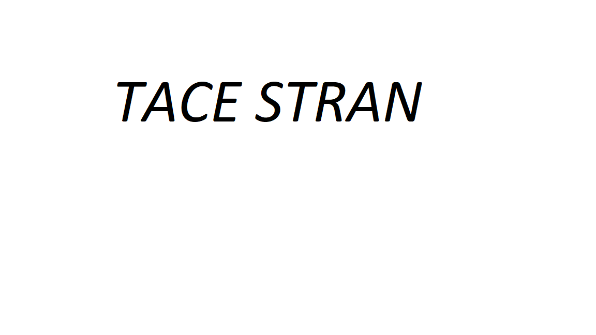

ZNANI HEKERJI
Kevin David Mitnick je ameriški računalniški svetovalec in heker. S hekanjem je začel že pri 12. Letih in pri 15 uspešno prevaral avtobusni sistem v Los Angelesu.
V srednji šoli je že znal vdirati v telefone, kmalu po tem pa je začel vdirati v omrežja najbolj znanih podjetij (Nokia, Motorola, IBM, Siemens).
Takrat je veljal za najbolj iskanega kiberkriminalca na svetu.
Zaradi vdorov je bil zaprt kar dvakrat, danes pa vodi svoje podjetje, ki deluje na področju varnost na internetu.
O njegovi zgodbi so posneli tudi film Track Down.
Albert Gonzalez je heker, ki je že pri 14 letih vdrl v Naso, zaradi česar so njegovo šolo obiskali agenti FBI.
Ustanovil je tudi spletno stran Shadowcrew.com, na kateri so lahko člani kupovali in preprodajali ukradene številke bančnih računov, kreditne kartice, lažne potne liste in druge ponarejene izkaznice.
Aretiran je bil leta 2008, v zaporu pa bo ostal vsaj do leta 2025.
Jonathan James je bil ameriški heker, povezan tudi z Gonzalezom.
Vdrl je v Nasine sisteme in tako postal prvi obsojeni mladoletni heker.
Oblasti so ga zmotno preiskovale zaradi Gonzalesove kraje kreditnih kartic in zato je leta 2008 storil samomor.
Bil je namreč prepričan, da ga bodo zaprli.
Gary McKinnon je škotski heker, ki je med letom 2001 in 2002 vdrl v več kot sto računalnikov ameriške vojske in vesoljske agencije Nasa.
Izbrisal je ogromno zaupnih podatkov, uničeval varnostne kopije datotek in se poigraval z občutljivo programsko opremo.
Ameriško vlado je popravilo škode, ki jo je povzročil, stalo skoraj milijon dolarjev.
McKinnon se svojega početja ni sramoval in ga ni poskušal skriti, temveč je ameriški vojski napovedal, da jih ne bo pustil pri miru, dokler ga ne ujamejo.
Adrian Lamo oziroma brezdomni heker (The homeless hacker) si je ime na prelomu tisočletja ustvaril z vdiranjem v strežnike Microsofta, Googla, Yahooja in ameriškega časopisa The New York Times.
Vzdevek Brezdomni je Lamo pridobil zato, ker za svoje hekerske vdore nikoli ni uporabljal lastnega računalnika, temveč je v druge sisteme vdiral le iz javnih mest.
Uporabljal je računalnike v knjižnicah, internetnih kavarnah ter na univerzah.

 kontakt
kontakt
Če hočete še kaj se obrnete na lojzeta